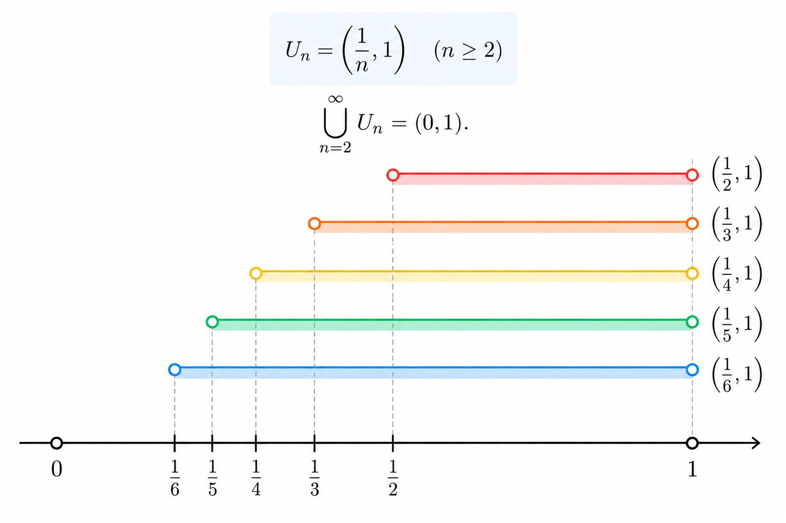
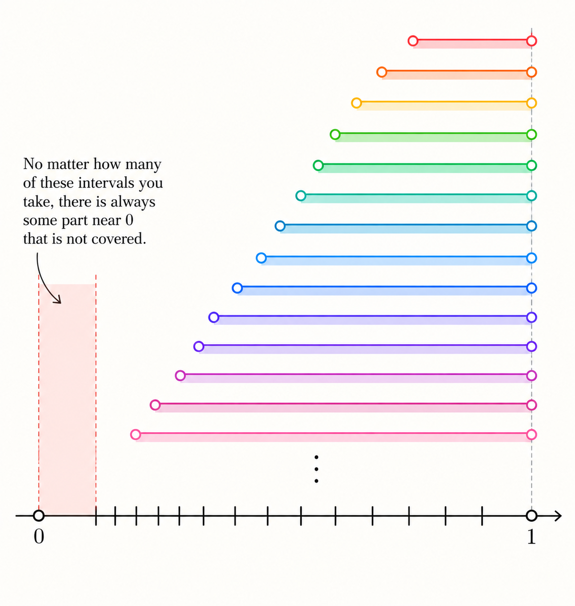

The three equivalent forms of completeness
The Axiom of Completeness, the Nested Interval Property, and the Heine–Borel Theorem all point to the same fundamental idea: the set of real numbers is complete. In other words, there are no gaps in the real number line. These three statements are equivalent in the sense that, if we take any one of them as an axiom, we can prove the other two from it. This is the idea we will explore here.
A set \(A \subseteq \mathbb{R}\) is bounded above if there exists a number \(b \in \mathbb{R}\) such that
The number \(b\) is called an upper bound for \(A\).
A set \(A \subseteq \mathbb{R}\) is bounded below if there exists a number \(l \in \mathbb{R}\) such that
The number \(l\) is called a lower bound for \(A\).
Let \(A \subseteq \mathbb{R}\). The least upper bound, or supremum, of \(A\) is a real number \(s \in \mathbb{R}\), denoted by \(\text{sup}\,A\) satisfying two conditions:
\(s\) is an upper bound for \(A\)
If \(b\) is any upper bound for \(A\), then \(s \leq b\).
The greatest lower bound is defined likewise in the similar way and denoted by \(\text{inf}\, A.\)
A set \(K \subseteq \mathbb{R}\) is compact if every open cover of \(K\) contains a finite subcover.
An open cover of \(K\) is a collection of open sets \(\{U_\alpha\}\) such that every point of \(K\) lies in at least one of the sets. Equivalently, the union of all the sets contains \(K\):
A finite subcover means that we can choose only finitely many sets from the original cover, and these chosen sets still contain every point of \(K\). Thus, for some finite collection,
The set \((0,1)\) is not compact.
Consider the collection of open intervals
Every point of \((0,1)\) belongs to at least one of these intervals, so
Thus \(\{U_n\}_{n=1}^{\infty}\) is an open cover of \((0,1)\). Now by definition, \((0,1)\) to be a compact set, there must be some finite collection of \(U_\alpha\) whose union would give you the open interval \((0,1)\).

Now suppose that finitely many intervals from this cover were enough to cover \((0,1)\). Then, for some finite indices \(\alpha_1,\ldots,\alpha_m\),
Let \(N=\max\{\alpha_1,\ldots,\alpha_m\}\). Since the intervals are nested,
But this misses every point sufficiently close to \(0\), for example \(\frac{1}{2(N+1)}\). Hence no finite collection of the \(U_n\)'s can cover \((0,1)\).

Therefore this open cover has no finite subcover. We have found an open cover of \((0,1)\) for which every finite selection leaves some points uncovered.
Every non-empty subset \(S \subseteq \mathbb{R}\) that is bounded above has a least upper bound (supremum) in \(\mathbb{R}\).
That is, if \(S \neq \varnothing\) and there exists \(M \in \mathbb{R}\) such that \(s \leq M\) for all \(s \in S\), then there exists a number \(L \in \mathbb{R}\) such that
\(s \leq L\) for all \(s \in S\) \(\text{(}L\text{ is an upper bound)}\), and
If \(U\) is any upper bound of \(S\), then \(L \leq U\) \(\text{(}L\text{ is the least upper bound)}\).
Let \(I_n=[a_n,b_n]\) be a sequence of non-empty closed bounded intervals such that \(I_{n+1}\subseteq I_n\) for every \(n\in\mathbb{N}\). Then
Since \(I_{n+1}\subseteq I_n\), we have \(a_n\leq a_{n+1}\leq b_{n+1}\leq b_n\). Thus the left endpoints form a set bounded above, while the right endpoints form a set bounded below. By the Axiom of Completeness, the left endpoints have a supremum. Let
Because \(\alpha\) is an upper bound of the \(a_n\)'s, \(a_n\leq\alpha\) for every \(n\). On the other hand, for each fixed \(n\), \(b_n\) is an upper bound for every left endpoint \(a_m\). Hence, by the defining property of the supremum, \(\alpha\leq b_n\). Therefore
Thus \(\alpha\in I_n\) for every \(n\), so the intervals all share the point \(\alpha\):